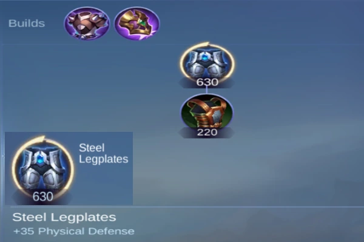

Domine a Rota do Ouro em Mobile Legends Bang Bang com o nosso guia completo. Aprenda estratégias essenciais para o jogo de rotas, congelamento, emboscadas e domínio no final da partida para liderar seu time à vitória.
Ilustração de personagens da Gold Lane no jogo Mobile Legends Bang Bang.
1. Entendendo o Papel do Rota de Ouro
A Rota de Ouro é uma rota única no MLBB por seu potencial de fornecer um rápido crescimento através do aumento da geração de ouro. Como Rota de Ouro, normalmente jogando como um atirador, seu trabalho é farmar com segurança, evitar riscos desnecessários e alcançar seus picos de poder de itens o mais rápido possível. Diferente de outros papéis, como os caçadores ou suportes, você não tem muita influência no início do jogo. Seu principal objetivo é sobreviver e evitar dar vantagens desnecessárias ao inimigo.
Alto Risco, Alta Recompensa: Atiradores são frequentemente vulneráveis no início, mas se tornam imparáveis causadores de dano no final do jogo.
Isolamento da Rota: Espere estar sozinho, com suporte limitado. Isso torna suas decisões críticas.
Crescimento: Seu poder surge conforme você coleta itens principais. Sua eficácia aumenta significativamente após atingir esses marcos de itens chave.
2. Escolhendo o Atirador Certo
No Mobile Legends: Bang Bang, os atiradores são conhecidos pelo termo ADC que significa Attack Damage Carry. Ele é usado para descrever heróis que causam altos danos físicos a longo alcance e que são fundamentais para carregar o time em direção à vitória, especialmente no final da partida.
Selecionar o atirador certo para a situação pode afetar drasticamente seu desempenho na Rota de Ouro. Atiradores têm diferentes pontos fortes dependendo de seu kit e necessidades de itens. Aqui estão algumas categorias a considerar:
Atiradores Dominantes no Início do Jogo
Atiradores como Bruno e Kimmy se destacam no início do jogo. Suas habilidades permitem que provoquem os inimigos e dominem seus oponentes de rota, facilitando a pressão sobre o Rota de Ouro inimigo e potencialmente garantindo torres cedo.
Vantagens: Forte poke e controle da rota.
Desvantagens: Muitas vezes perdem força no final do jogo em comparação com outros atiradores de crescimento.
Atiradores fortes no Early Game: Bruno, Clint, Karrie, Kimmy, Beatrix, Brody, Melissa, Moskov, Wanwan.
Atiradores de Crescimento no Final do Jogo
Heróis como Claude e Karrie são mais fracos no início, mas se tornam imparáveis no final do jogo. Esses atiradores dependem fortemente de farmar e construir seus itens principais antes de contribuírem significativamente para as lutas de equipe.
Vantagens: Alto dano e potencial de luta em equipe no final do jogo.
Desvantagens: Vulneráveis no início; exigem mecânicas fortes para sobreviver à pressão na rota.
Saber como contra-atacar o atirador inimigo pode lhe dar uma vantagem significativa. Se você estiver enfrentando um atirador forte no início do jogo, considere jogar de forma defensiva e focar no farm até obter seus itens chave. Por outro lado, se seu herói tiver vantagem, você deve tentar intimidar o inimigo e expulsá-lo da rota.
Alguns Exemplos de Counter-Pick:
Hanabi forte contra: Layla
Kimmy forte contra: Karrie, Lesley
Harith forte contra: Clint, Karrie
Brody forte contra: Moskov, Lesley, Claude
Claude forte contra: Irithel, Layla
3. Sobrevivendo ao Início do Jogo
O início do jogo é um equilíbrio delicado para o Rota de Ouro. Você quer farmar eficientemente sem se estender demais e se expor a emboscadas. Aqui estão algumas dicas para sobreviver a essa fase crítica:
Último Golpe: Sempre tente dar o último golpe nos minions para ganhar ouro. Perder ouro dos minions pode atrasar seus picos de itens.
Minimize as Mortes: Morrer no início do jogo pode atrasá-lo significativamente, então jogue com cautela, especialmente entre o primeiro e o segundo minuto, quando os caçadores inimigos completam suas rotações e provavelmente emboscarão sua rota.
Jogue de Forma Segura Contra Agressão: Se você estiver enfrentando um atirador forte no início, não tenha medo de jogar de forma passiva. Foque em farmar sob sua torre, se necessário, e espere uma oportunidade para sua equipe ajudar.
Ao sobreviver ao início do jogo sem entregar mortes ou ficar muito atrás, você se prepara para o sucesso no meio e final do jogo.
4. Congelando a Rota: Explicação do Mid e Torre Congelada
O controle da rota é um aspecto crítico para dominar a Rota de Ouro. Congelar a rota é uma estratégia usada para manipular a onda de minions, de modo que ela permaneça em uma posição segura ou vantajosa para você. Existem dois principais tipos de congelamento de rota:
Congelamento no Meio
O congelamento no meio ocorre quando a onda de minions é mantida no centro da rota. Esse tipo de congelamento permite que você pressione o inimigo, enquanto ainda está relativamente seguro, mas o coloca mais próximo da torre inimiga e em maior risco de emboscadas.
Use Quando: Você está à frente e pode lidar com possíveis emboscadas.
Risco: Maior exposição a emboscadas do caçador.
Congelamento de Torre
Este método é o mais seguro. Você deixa a onda de minions se aproximar da sua torre, segurando o inimigo no lugar enquanto nega o farm deles e se mantém seguro sob a torre.
Use Quando: Você está empatado ou atrás no confronto e quer evitar emboscadas enquanto prepara sua equipe para uma emboscada no inimigo.
Execução: Limpe os dois minions pequenos e segure o minion canhão em frente à sua torre.
Saber quando e como congelar uma rota pode impedir seu oponente de farmar livremente, permitindo que você domine sua rota com a ajuda do seu caçador ou suporte.
5. Pressionando com Segurança: Quando e Como Pressionar a Torre
Pressionar uma torre pode ser tentador, mas muitas vezes é arriscado. Saber quando e como pressionar de forma eficaz é essencial para evitar mortes desnecessárias.
Pressione Quando: Todos os inimigos estão visíveis no mapa. Este é o momento mais seguro para aplicar pressão.
Não Pressione: Quando nenhum inimigo está visível, a chance de ser emboscado aumenta dramaticamente.
Queda da Torre: Quando a primeira torre da sua rota cai (seja a sua ou a do inimigo), é hora de começar a rotacionar e ajudar outras rotas.
Equilibrar agressão e segurança ao pressionar é essencial para o sucesso na Rota de Ouro.
6. Lidando com Emboscadas: Sobrevivendo Sob Pressão
Como Rota de Ouro, você é um alvo principal para emboscadas inimigas. Sobreviver sob pressão é vital para sua sobrevivência e crescimento. Veja como lidar com emboscadas:
Consciência do Mapa: Mantenha sempre os olhos no minimapa. Se os inimigos estiverem desaparecidos, presuma que estão vindo para você.
Verificação de Moitas: Use habilidades ou ataques automáticos para verificar moitas suspeitas antes de se mover para elas.
Reforço: Se você perceber que inimigos estão desaparecidos, peça ajuda ou reforço à sua equipe. Mensagens rápidas como "Preciso de Ajuda" podem salvar sua vida.
Lembre-se, se você estiver enfrentando um ataque de três jogadores em sua torre, é melhor abandonar a torre e viver do que morrer defendendo-a.
7. Rotação Ideal: Quando e Onde se Mover
Quando a primeira torre cai, é hora de começar a rotacionar. No entanto, rotacionar muito cedo ou para o local errado pode ser desastroso para você e sua equipe. Aqui está um guia para uma rotação ideal:
Rotacione Quando: A primeira torre caiu ou se o inimigo está com pouca vida e você tem a oportunidade de garantir uma eliminação.
Escolha de Caminho: Dependendo da sua visão dos inimigos, escolha a rota mais segura pelo jungle ou ao longo do lado do mapa.
Evite se estender demais ao rotacionar, pois um atirador bem farmado é um alvo principal para o time inimigo.
Mapa de Rotação Segura da Rota de Ouro, Mobile Legends: Bang Bang
8. Estratégia de Luta em Equipe: Posicionamento e Timing
Como atirador, o posicionamento é sua habilidade mais importante nas lutas de equipe. Você é o principal causador de dano da equipe, mas também o mais vulnerável. Veja como se posicionar de forma eficaz:
Mantenha-se Atrás: Nunca inicie primeiro. Sempre deixe seu tanque iniciar e criar espaço para você.
Isole Ameaças: Posicione-se de forma que você esteja ao alcance de apenas um ou dois inimigos, maximizando seu dano enquanto minimiza sua exposição a habilidades de controle coletivo (CC).
Aguarde o CC: Deixe o inimigo usar suas principais habilidades de controle de grupo na sua linha de frente antes de avançar para limpar.
Um bom posicionamento pode permitir que você cause dano massivo sem ser eliminado, levando sua equipe à vitória.
9. Equipamentos e Itens para a Rota de Ouro
A build é outro aspecto crítico para dominar a Rota de Ouro. Aqui estão alguns itens recomendados com base na situação:
Coxotes de Aço: Uma ótima compra no início do jogo se o Rota de Ouro e o caçador inimigos causam dano físico.

Build Coxotes de Aço, Mobile Legends: Bang Bang
Itens Principais: Sempre tente completar seus itens principais antes de rotacionar ou se envolver em lutas intensas. Esses itens são geralmente de dano, como Espada Caçadora de Demônios, Lâmina do Desespero ou Confronto Final, dependendo do seu herói.
Ajuste sua build de itens de acordo com a situação e sempre considere comprar itens defensivos como Imortalidade se você estiver sendo frequentemente alvo dos inimigos.
10. Conclusão: Dominando a Rota de Ouro
Dominar a Rota de Ouro em Mobile Legends Bang Bang é uma tarefa complexa e exigente. Você precisa de um entendimento profundo das forças e fraquezas do seu herói, excelente consciência de mapa e mecânicas fortes para farmar e se posicionar corretamente. Seguindo as estratégias descritas neste guia escolhendo o atirador certo, sobrevivendo ao início do jogo, dominando o congelamento de rota, pressionando com segurança e otimizando suas rotações—você pode maximizar seu impacto e carregar sua equipe para a vitória.
Lembre-se, paciência e jogo inteligente são a chave. A Rota de Ouro pode ser frustrante às vezes, mas com a mentalidade e estratégias certas, você pode dominar seus oponentes e garantir seu papel como o jogador mais valioso no campo de batalha. Boa caçada e boa sorte!
Explore novas habilidades com nossos heróis em destaque!
Você gostou do nosso Guia da Rota de Ouro? Há algo que não entendeu ou gostaria de sugerir mudanças? Convidamos você a se juntar à nossa sessão de comentários na página do Alexandre Games Blog. Não hesite em expressar sua opinião, clarificar suas dúvidas e compartilhar sua sugestões. Clique no botão abaixo para começar:


 Guia de Dyrroth MLBB
Guia de Dyrroth MLBB